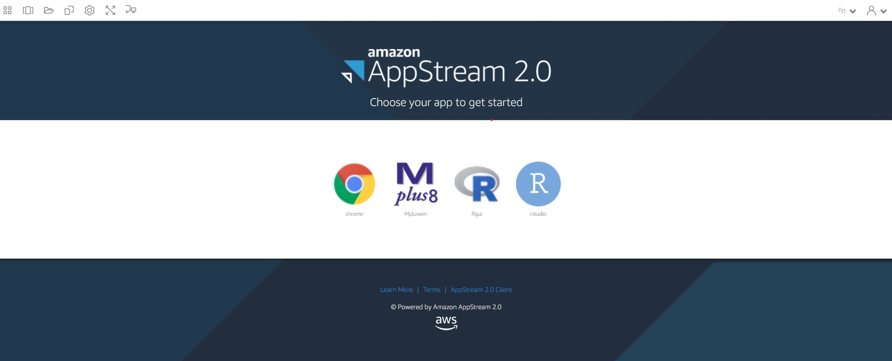
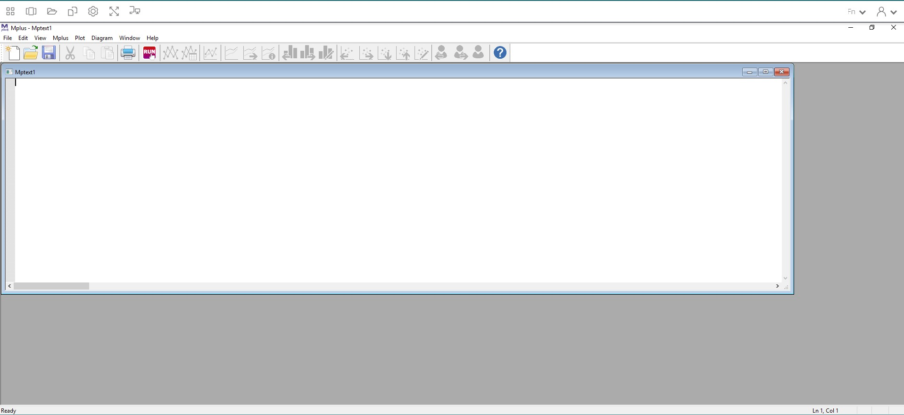
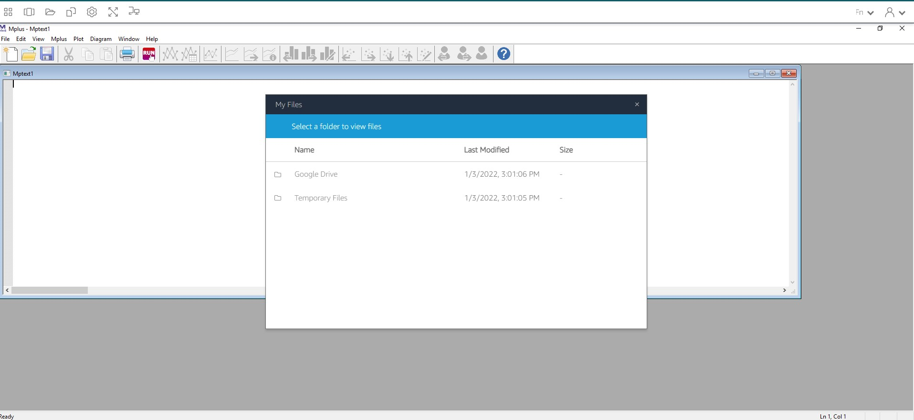
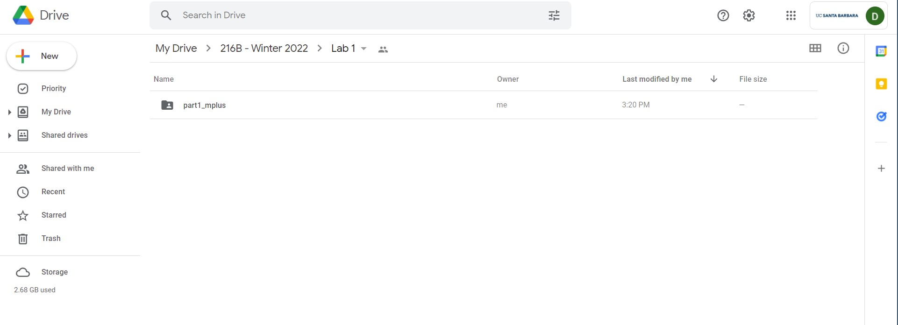
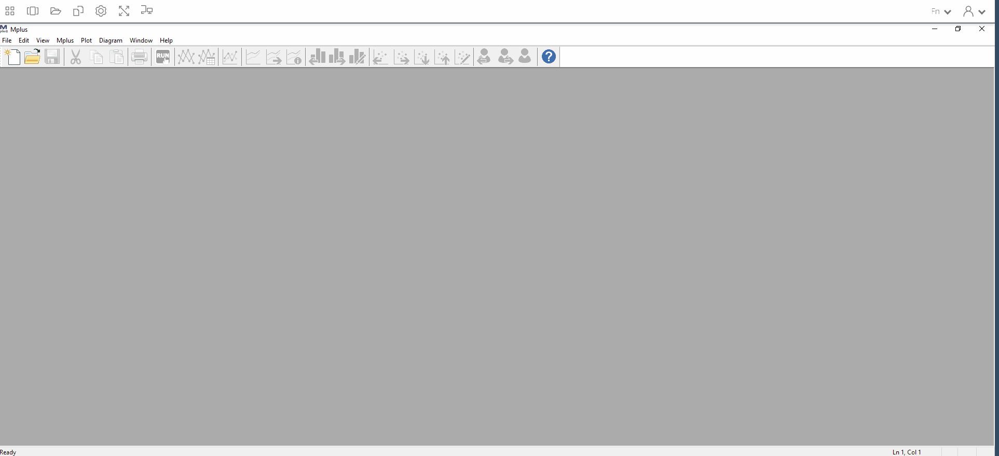
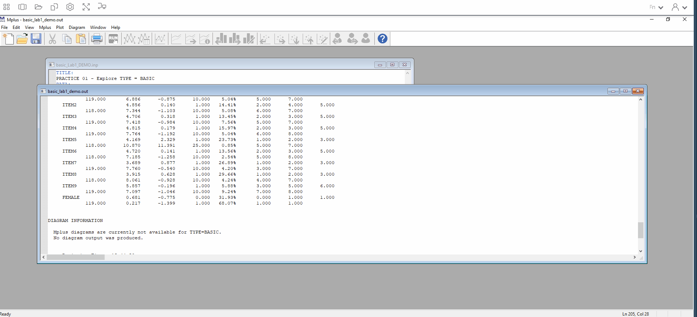
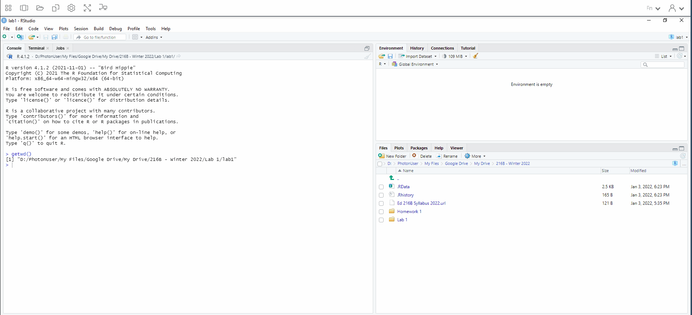
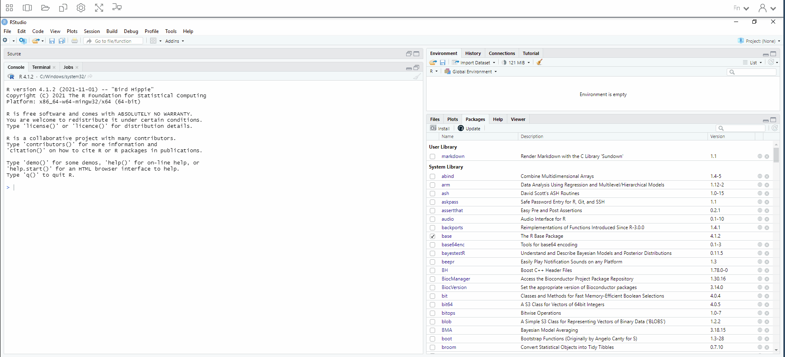

R Projects Introduction to R, Mplus, and MplusAutomation
Introduction to R, Mplus, and MplusAutomation
An overview of using the MplusAutomation package in R.
Please note that this document walks through AppStream which provides to access Mplus at UC Santa Barbara. If you already own Mplus, then you can ignore that part (i.e., you do not need to link your Google Drive to AppStream).
For Part 1, we will first walk through how to run basic descriptive statistics using only Mplus.
Then in the in the second part, we will use an R package called MplusAutomation to run the same analysis as part 1, only this time using only RStudio.
PART 1: Introduction to Mplus
Step 1: Open AppStream

Follow these steps to get access to Mplus and RStudio (Note: These steps are not necessary if you already own Mplus). When you get access to the AppStream space, it takes about two minutes to begin the session. It would be a good idea to get it open before labs start that way you’re not behind.
Step 2: Open Mplus in AppStream

This is the Mplus interface. Even though we will NOT be working directly in Mplus for the rest of the quarter, it is good to get an idea of how Mplus works.
Step 3: Link your Google Drive to AppStream

AppStream uses GoogleDrive to access and save all your files that you work with. It is important to save your files before you close AppStream as there is no cloud storage. Everything is stored locally during your session, but upon closing AppStream, your data is cleared.
Step 4: Create a Google Drive folder for this class and import lab material

Open up a new browser (not in AppStream) and log in to your Google Drive. Create a new folder for this class so we can start importing and save into your Google Drive. Go to GauchoSpace and download the lab materials for this class and import it into this new folder you created. Note: As we go forward with this lab, the location of this folder will change, just a heads up.
Step 5: Import syntax into Mplus from Google Drive

All syntax or input files for Mplus are a .inp file. You may also create a new .inp file directly in Mplus and populate the syntax there. For now, we can use one that is already complete.
-
Basic skeleton of an Mplus .inp syntax
-
TITLE: title of our document
-
DATA: data file (must be in the same folder as the .inp)
-
VARIABLE:
-
NAMES = names of each variable in order of each column
-
MISSING = what the missing data is labeled as
-
USEVAR = names of the variable actually being used in the analysis
-
-
ANALYSIS:
- TYPE = this section is what will change constantly based on your model. For now, we are running “type = basic” which will provide us descriptive statistics of our variables.
-
NOTE: Please view the data file that is provided in this lab (basic_Lab1_DEMO.dat). Mplus works with .dat files to run analyses. The dataset must also be formatted in certain way in order for Mplus to read it. Please see “Mplus Basics” on GauchoSpace under Mplus Resources for more information. There is also a codebook that provides some information on the items on Gauchospace (“Lab 1 Codebook”).
Step 6: Click Run

This will run our “type=basic” analysis which will provide us a .out file that contains variables descriptive statistics of our variables. AppStream will save this .out file in your current GoogleDrive folder. All .out and .inp files can be open as a text file if you want to access them off AppStream/Mplus.
PART 2: Introduction to RStudio
Now, we will be obtaining the same .out file that we produced above using RStudio (and never having to open Mplus!).
This is done using the
MplusAutomation package (Hallquist & WIley, 2018).
This R package communicates with Mplus to replicate the process we went through above using Rstudio and R language.
While this course expects you to have some R knowledge, I will go through some basics here.
Please see “R-Studio Basics” on GauchoSpace under R Resources for R tips.
WHAT is MplusAutomation & WHY should we use it?
WHAT?
MplusAutomationis anRpackage- It “wraps around” the
Mplusprogram - Requires both
R&Mplussoftware - Requires learning some basics of 2 programming languages
- Car metaphor: R/Rstudio is the steering wheel or dashboard & Mplus is the engine
WHY?
- As a data analyst using Mplus to analyze projects that often span multiple years I realized a need for clearly organized work procedures in which every research decision can be documented in a single place.
- The motivation for using this method is to increase reproducibility, organization, efficiency, and transparency
HOW?
- We will interface entirely within R-Studio.
- The code presented will be very repetitive by design. Creating a consistent routine is key!
Step 1: Open RStudio in AppStream

Open R studio within AppStream. You don’t need to close Mplus. IMPORTANT: Because we are using a package that communicates with Mplus, we must use the AppStream interface to run Rstudio (unless you already have Mplus available on your personal computer).
Step 2: Create a new R-project

R-projects help us organize our folders , filepaths, and scripts. To create a new R project:
- File –> New Project…
Click “New Directory” –> New Project –> Name your project (Perhaps “lab1”)
Before you click “Create Project,” save your project under “My Drive”. THIS IS IMPORTANT. If your file path is too long (longer than 90 characters), then Mplus cuts off the filepath and will not run your syntax. Move all your Lab 1 Materials into this new project folder you have created.
Step 3: Create an R-markdown document

An R-markdown file provides an authoring framework for data science that allows us to organize our reports using texts and code chunks.
This document you are reading was made using R-markdown!
Lets create an R-markdown and write script to run a “type=basic” analysis using the R package, MplusAutomation.
To create an R-markdown:
- File –> New File –> R Markdown…
Note: AppStream may ask you to update R markdown. Click “Yes.”
In the window that pops up, give the R-markdown a title such as “Lab 1 - Introduction to RStudio.” Click “OK.” You should see a new markdown with some example text and code chunks. We want a clean document to start off with so delete everything from line 10 down. Go ahead and save this document to your Google Drive folder.
Step 4: Load packages
Your first code chunk in any given markdown should be the packages you will be using. To insert a code chunk, etiher use the keyboard shortcut ctrl + alt + i or Code –> Insert Chunk or click the green box with the letter C on it. There are a few packages we want our markdown to read in:
library(MplusAutomation)
library(tidyverse) #collection of R packages designed for data science
library(here) #helps with filepaths
library(haven) # read_sav()
library(psych) # describe()
library(ggpubr) # ggdensity() and ggqqplot()
library(corrplot) # corrplot()
here::i_am("index.Rmarkdown")
As a reminder, if a function does not work and you receive an error like this: could not find function "random_function"; or if you try to load a package and you receive an error like this: there is no package called `random_package` , then you will need to install the package using install.packages("random_package") in the console (the bottom-left window in R studio).
Once you have installed the package you will never need to install it again, however you must always load in the packages at the beginning of your R markdown using library(random_package), as shown in this document.
NOTE: With AppStream, we pre-installed most packages. However, there may be some we missed and those may need to be installed with each session. If you are using R studio on your personal computer, then once it is installed, it doesn’t need to be installed again.
Step 5: Read in data set
Recall that our data set that we used earlier is a .dat file with no variable names.
Remember that this is a data set specifically designed for Mplus.
Let grab the original one (an SPSS file) in the data folder within the part2_rstudio folder.
data <- read_sav(here("part2_rstudio", "data", "explore_lab_data.sav"))
# Ways to view data in R:
# 1. click on the data in your Global Environment (upper right pane) or use...
View(data)
# 2. summary() gives basic summary statistics & shows number of NA values
# *great for checking that data has been read in correctly*
summary(data)
## item1 item2 item3 item4
## Min. : 1.000 Min. : 1.000 Min. : 1.000 Min. : 1.000
## 1st Qu.: 2.000 1st Qu.: 2.000 1st Qu.: 2.000 1st Qu.: 2.000
## Median : 4.000 Median : 5.000 Median : 5.000 Median : 5.000
## Mean : 4.508 Mean : 4.856 Mean : 4.706 Mean : 4.815
## 3rd Qu.: 6.000 3rd Qu.: 7.000 3rd Qu.: 7.000 3rd Qu.: 7.000
## Max. :10.000 Max. :10.000 Max. :10.000 Max. :10.000
## NA's :1
## item5 item6 item7 item8
## Min. : 1.000 Min. : 1.00 Min. : 1.000 Min. : 1.000
## 1st Qu.: 2.000 1st Qu.: 2.00 1st Qu.: 1.000 1st Qu.: 1.000
## Median : 3.000 Median : 5.00 Median : 3.000 Median : 3.000
## Mean : 4.169 Mean : 4.72 Mean : 3.689 Mean : 3.915
## 3rd Qu.: 6.000 3rd Qu.: 7.00 3rd Qu.: 5.000 3rd Qu.: 6.000
## Max. :25.000 Max. :10.00 Max. :10.000 Max. :10.000
## NA's :1 NA's :1 NA's :1
## item9 female
## Min. : 1.000 Min. :0.0000
## 1st Qu.: 4.000 1st Qu.:0.0000
## Median : 6.000 Median :1.0000
## Mean : 5.857 Mean :0.6807
## 3rd Qu.: 8.000 3rd Qu.:1.0000
## Max. :10.000 Max. :1.0000
##
# 3. names() provides a list of column names. Very useful if you don't have them memorized!
names(data)
## [1] "item1" "item2" "item3" "item4" "item5" "item6" "item7" "item8"
## [9] "item9" "female"
# 4. head() prints the top x rows of the dataframe
head(data)
## # A tibble: 6 × 10
## item1 item2 item3 item4 item5 item6 item7 item8 item9 female
## <dbl> <dbl> <dbl> <dbl> <dbl> <dbl> <dbl> <dbl> <dbl> <dbl+lbl>
## 1 2 1 1 1 1 1 1 1 1 1 [female]
## 2 2 2 1 1 1 2 1 1 1 1 [female]
## 3 3 2 3 3 1 2 1 1 1 1 [female]
## 4 1 2 1 1 1 4 1 1 1 0 [male]
## 5 2 1 1 3 1 1 2 1 1 1 [female]
## 6 3 1 2 1 3 2 2 2 1 1 [female]
You can also look at the dataframe with labels and response scale meta-data:
sjPlot::view_df(data)
| ID | Name | Label | Values | Value Labels |
|---|---|---|---|---|
| 1 | item1 | range: 1.0-10.0 | ||
| 2 | item2 | range: 1-10 | ||
| 3 | item3 | range: 1-10 | ||
| 4 | item4 | range: 1-10 | ||
| 5 | item5 | range: 1-25 | ||
| 6 | item6 | range: 1-10 | ||
| 7 | item7 | range: 1-10 | ||
| 8 | item8 | range: 1-10 | ||
| 9 | item9 | range: 1-10 | ||
| 10 | female | Student gender | 0 1 |
male female |
This SPSS dataset gives us more information than the .dat one. We are able to see the variable names, and descriptions.
Convert from .sav to .csv
It’s a good idea to convert .sav files to .csv. Here is how to convert the .sav to .csv:
# write_csv saves a .csv version of your dataset to your working directory.
# Enter the name of the object that contains your data set (in this case, "exp_lab1_data.csv"), then enter the name you want to save your dataset as. We can call it the same thing: "screen1.csv"
write_csv(data, here("part2_rstudio", "data", "exp_lab1_data.csv"))
# read the unlabeled data back into R
data_csv <- read_csv(here("part2_rstudio", "data", "exp_lab1_data.csv"))
Optional: Convert from .csv to Mplus .dat file
Say you want an Mplus .dat file and don’t want to go through the hassle of deleting rows and manual conversion to .dat.
You can use the prepareMplusData() function to convert from .csv to .dat.
prepareMplusData(data_csv, here("part2_rstudio", "data", "exp_lab1_data.dat"))
## TITLE: Your title goes here
## DATA: FILE = "C:/Users/Dina Arch/Box/Dina's Website/dina_website/content/collection/intro-r-mplus/part2_rstudio/data/exp_lab1_data.dat";
## VARIABLE:
## NAMES = item1 item2 item3 item4 item5 item6 item7 item8 item9 female;
## MISSING=.;
Step 6: Using MplusAutomation
To run a basic model using MplusAutomation we used the mplusObject() function and the mplusModeler() function.
What does the mplusObject() function do?
1. It generates an Mplus input file (does not need full variable name list, its automated for you!) 2. It generates a datafile specific to each model 3. It runs or estimates the model (hopefully) producing the correct output. Always check!
What does the mplusModeler() function do?
- Creates, runs, and reads Mplus models created using
mplusObject() - You can specify where you want the .out file saved
check=TRUEchecks for missing semicolons,run=TRUEruns the model,hashfilename=FALSEdoes not add a hash of the raw data to the datafile name.
m_basic <- mplusObject(
TITLE = "PRACTICE 01 - Explore TYPE = BASIC;",
VARIABLE =
"usevar= item1 item2 item3 item4 item5 item6 item7 item8 item9 female;",
ANALYSIS =
"type = basic; ",
usevariables = colnames(data_csv),
rdata = data_csv)
m_basic_fit <- mplusModeler(m_basic,
dataout=here("part2_rstudio", "basic.dat"),
modelout=here("part2_rstudio", "basic.inp"),
check=TRUE, run = TRUE, hashfilename = FALSE)
NOTE: You don’t need to specify MISSING here since it automatically detects the missing value from the data set.
You also don’t need NAMES as it detects the names from the data set.
Optional: Subsetting observations
You can use Mplus syntax to explore descriptives for observations reported as “female.”
Add line of syntax: useobs = female == 1;
fem_basic <- mplusObject(
TITLE = "PRACTICE 02 - Explore female observations only;",
VARIABLE =
"usevar = item1 item2 item3 item4 item5 item6 item7 item8 item9;
useobs = female == 1; !include observations that report female in analysis",
ANALYSIS =
"type = basic;",
usevariables = colnames(data_csv),
rdata = data_csv)
fem_basic_fit <- mplusModeler(fem_basic,
dataout=here("part2_rstudio", "fem_basic.dat"),
modelout=here("part2_rstudio", "fem_basic.inp"),
check=TRUE, run = TRUE, hashfilename = FALSE)
PART 3: Data Cleaning & Screening
It’s important to explore your variables before running a factor analysis.
First, lets rename our variables to something more meaningful using rename().
As a reminder, use the pipe operator %>% to create a sequence of functions, you can use the shortcut crt + shift + m:
new_names <- data_csv %>%
rename(school_motiv1 = item1,
school_motiv2 = item2,
school_motiv3 = item3,
school_comp1 = item4,
school_comp2 = item5,
school_comp3 = item6,
school_belif1 = item7,
school_belif2 = item8,
school_belif3 = item9)
Descriptive Statistics
Let’s look at descriptive statistics for each variable using summary():
new_names %>%
summary()
## school_motiv1 school_motiv2 school_motiv3 school_comp1
## Min. : 1.000 Min. : 1.000 Min. : 1.000 Min. : 1.000
## 1st Qu.: 2.000 1st Qu.: 2.000 1st Qu.: 2.000 1st Qu.: 2.000
## Median : 4.000 Median : 5.000 Median : 5.000 Median : 5.000
## Mean : 4.508 Mean : 4.856 Mean : 4.706 Mean : 4.815
## 3rd Qu.: 6.000 3rd Qu.: 7.000 3rd Qu.: 7.000 3rd Qu.: 7.000
## Max. :10.000 Max. :10.000 Max. :10.000 Max. :10.000
## NA's :1
## school_comp2 school_comp3 school_belif1 school_belif2
## Min. : 1.000 Min. : 1.00 Min. : 1.000 Min. : 1.000
## 1st Qu.: 2.000 1st Qu.: 2.00 1st Qu.: 1.000 1st Qu.: 1.000
## Median : 3.000 Median : 5.00 Median : 3.000 Median : 3.000
## Mean : 4.169 Mean : 4.72 Mean : 3.689 Mean : 3.915
## 3rd Qu.: 6.000 3rd Qu.: 7.00 3rd Qu.: 5.000 3rd Qu.: 6.000
## Max. :25.000 Max. :10.00 Max. :10.000 Max. :10.000
## NA's :1 NA's :1 NA's :1
## school_belif3 female
## Min. : 1.000 Min. :0.0000
## 1st Qu.: 4.000 1st Qu.:0.0000
## Median : 6.000 Median :1.0000
## Mean : 5.857 Mean :0.6807
## 3rd Qu.: 8.000 3rd Qu.:1.0000
## Max. :10.000 Max. :1.0000
##
Alternatively, we can use the psych::describe() function to give more information:
new_names %>%
describe()
## vars n mean sd median trimmed mad min max range skew
## school_motiv1 1 119 4.51 2.64 4 4.36 2.97 1 10 9 0.31
## school_motiv2 2 118 4.86 2.72 5 4.76 2.97 1 10 9 0.14
## school_motiv3 3 119 4.71 2.74 5 4.56 2.97 1 10 9 0.31
## school_comp1 4 119 4.82 2.80 5 4.71 2.97 1 10 9 0.18
## school_comp2 5 118 4.17 3.31 3 3.79 2.97 1 25 24 2.30
## school_comp3 6 118 4.72 2.69 5 4.66 4.45 1 10 9 0.14
## school_belif1 7 119 3.69 2.80 3 3.36 2.97 1 10 9 0.87
## school_belif2 8 118 3.92 2.85 3 3.65 2.97 1 10 9 0.62
## school_belif3 9 119 5.86 2.68 6 5.90 2.97 1 10 9 -0.19
## female 10 119 0.68 0.47 1 0.72 0.00 0 1 1 -0.77
## kurtosis se
## school_motiv1 -0.91 0.24
## school_motiv2 -1.13 0.25
## school_motiv3 -1.02 0.25
## school_comp1 -1.22 0.26
## school_comp2 11.15 0.30
## school_comp3 -1.29 0.25
## school_belif1 -0.58 0.26
## school_belif2 -0.96 0.26
## school_belif3 -1.08 0.25
## female -1.43 0.04
What if we want to look at a subset of the data?
For example, what if we want to see those who identify as female?
We can use tidyverse::filter() to subset the data using certain criteria.
new_names %>%
filter(female == 1) %>%
describe()
## vars n mean sd median trimmed mad min max range skew
## school_motiv1 1 81 4.61 2.60 4.5 4.48 3.71 1 10 9 0.29
## school_motiv2 2 80 4.92 2.62 5.0 4.88 2.97 1 10 9 0.06
## school_motiv3 3 81 4.85 2.80 5.0 4.74 2.97 1 10 9 0.21
## school_comp1 4 81 4.93 2.75 5.0 4.86 2.97 1 10 9 0.13
## school_comp2 5 80 4.19 3.49 3.0 3.75 2.97 1 25 24 2.75
## school_comp3 6 80 4.74 2.69 5.0 4.70 4.45 1 10 9 0.06
## school_belif1 7 81 3.77 2.86 3.0 3.42 2.97 1 10 9 0.82
## school_belif2 8 80 3.90 2.90 3.0 3.59 2.97 1 10 9 0.64
## school_belif3 9 81 5.68 2.86 6.0 5.69 2.97 1 10 9 -0.06
## female 10 81 1.00 0.00 1.0 1.00 0.00 1 1 0 NaN
## kurtosis se
## school_motiv1 -0.87 0.29
## school_motiv2 -1.07 0.29
## school_motiv3 -1.18 0.31
## school_comp1 -1.24 0.31
## school_comp2 13.33 0.39
## school_comp3 -1.39 0.30
## school_belif1 -0.69 0.32
## school_belif2 -0.97 0.32
## school_belif3 -1.27 0.32
## female NaN 0.00
#You can use any operator to filter: >, <, ==, >=, etc.
Missing Values
Let’s check for missing values.
First, how are missing values identified?
They could be -999, NA, or literally anything else.
The simplest way to do this is to look back at the summary() function.
There are four variables with one missing value.
new_names %>%
summary()
## school_motiv1 school_motiv2 school_motiv3 school_comp1
## Min. : 1.000 Min. : 1.000 Min. : 1.000 Min. : 1.000
## 1st Qu.: 2.000 1st Qu.: 2.000 1st Qu.: 2.000 1st Qu.: 2.000
## Median : 4.000 Median : 5.000 Median : 5.000 Median : 5.000
## Mean : 4.508 Mean : 4.856 Mean : 4.706 Mean : 4.815
## 3rd Qu.: 6.000 3rd Qu.: 7.000 3rd Qu.: 7.000 3rd Qu.: 7.000
## Max. :10.000 Max. :10.000 Max. :10.000 Max. :10.000
## NA's :1
## school_comp2 school_comp3 school_belif1 school_belif2
## Min. : 1.000 Min. : 1.00 Min. : 1.000 Min. : 1.000
## 1st Qu.: 2.000 1st Qu.: 2.00 1st Qu.: 1.000 1st Qu.: 1.000
## Median : 3.000 Median : 5.00 Median : 3.000 Median : 3.000
## Mean : 4.169 Mean : 4.72 Mean : 3.689 Mean : 3.915
## 3rd Qu.: 6.000 3rd Qu.: 7.00 3rd Qu.: 5.000 3rd Qu.: 6.000
## Max. :25.000 Max. :10.00 Max. :10.000 Max. :10.000
## NA's :1 NA's :1 NA's :1
## school_belif3 female
## Min. : 1.000 Min. :0.0000
## 1st Qu.: 4.000 1st Qu.:0.0000
## Median : 6.000 Median :1.0000
## Mean : 5.857 Mean :0.6807
## 3rd Qu.: 8.000 3rd Qu.:1.0000
## Max. :10.000 Max. :1.0000
##
# summary(new_names)
Recode Continuous Variable into Factor
What if you want to recode a continuous variable into different levels (e.g., high, medium, and low)?
Let’s use the variable school_belief1 as an example.
First, let’s recall the descriptives:
new_names %>%
select(school_belif1) %>%
summary()
## school_belif1
## Min. : 1.000
## 1st Qu.: 1.000
## Median : 3.000
## Mean : 3.689
## 3rd Qu.: 5.000
## Max. :10.000
Here, we can see that the values range from 1 - 10. Lets recode the variable to look like this:
| Low | 1 - 3 |
| Medium | 4 - 6 |
| High | 7 - 10 |
We use cut() to divide continuous variables into intervals:
school_factor <- new_names %>%
mutate(school_factor = cut(school_belif1,
breaks = c(0, 3, 6, 10), #Use 0 at the beginning to ensure that 1 is included in the first break, then break by last number in each section (3, 6, 10)
labels = c("low", "medium", "high")))
# View summary
school_factor %>%
select(school_belif1, school_factor) %>%
summary()
## school_belif1 school_factor
## Min. : 1.000 low :72
## 1st Qu.: 1.000 medium:21
## Median : 3.000 high :26
## Mean : 3.689
## 3rd Qu.: 5.000
## Max. :10.000
Normality and Distributions
It’s important to inspect our data to see if it is normally distributed.
Many analyses are sensitive to violations of normality so in order to make sure we are confident that our data are normal, there are several things we can look at: density plots, histograms, QQ plots, box plots, scatterplots, and the descriptives such as skewness and kurtosis.
Normally, we would want to inspect every variable, but for demonstration purposes, lets focus on the school_belif1 variable.
Density Plots
A density plot is a visualization of the data over a continuous interval.
As we can see by this density plot, the variable school_belif1 is positively skewed.
ggdensity(new_names$school_belif1, fill = "lightgray")

Histogram
A histogram provides the same information as the density plot but provides a count instead of density on the x-axis.
hist(new_names$school_belif1, col = 'lightgray')

QQ Plots
QQ plot, or quantile-quantile plot, is a plot of the correlation between a sample and the normal distribution. In a QQ plot, each observation is plotted as a single dot. If the data are normal, the dots should form a straight line. If the data are skewed, you will see either a downward curve (negatively skewed) or upward curve (positively skewed).
ggqqplot(new_names$school_belif1)

As you can see in this QQ plot, there is an upward curve, which further tells us that we have a positively skewed variable.
Box Plots
Box plot can show us distributions, specifically the minimum, first quartile, median, third quartile, and maximum.
new_names %>% #
ggplot(aes(y = school_belif1)) +
geom_boxplot()

Bivariate Scatterplots
We can use pairs() to look at bivariate scatterplots.
Do the relationships look linear?:
pairs(new_names)

# Or we can look at individual scatterplots:
new_names %>%
ggplot(aes(school_belif1, school_belif2)) +
geom_point() +
geom_smooth(method = "lm", se =F) +
theme_minimal()

We can also use cor() to look at bivariate correlations for the entire data set (Note: Missing values are not allowed in correlation analyses, use drop_na() to do listwise deletion):
new_names %>%
drop_na() %>% #remove missing data
cor(method = "pearson") %>%
round(2) # round to 2 decimal places
## school_motiv1 school_motiv2 school_motiv3 school_comp1
## school_motiv1 1.00 0.82 0.74 0.64
## school_motiv2 0.82 1.00 0.60 0.68
## school_motiv3 0.74 0.60 1.00 0.52
## school_comp1 0.64 0.68 0.52 1.00
## school_comp2 0.59 0.53 0.41 0.55
## school_comp3 0.61 0.69 0.57 0.71
## school_belif1 0.54 0.50 0.56 0.57
## school_belif2 0.63 0.55 0.58 0.67
## school_belif3 0.40 0.37 0.52 0.43
## female 0.04 0.04 0.07 0.04
## school_comp2 school_comp3 school_belif1 school_belif2
## school_motiv1 0.59 0.61 0.54 0.63
## school_motiv2 0.53 0.69 0.50 0.55
## school_motiv3 0.41 0.57 0.56 0.58
## school_comp1 0.55 0.71 0.57 0.67
## school_comp2 1.00 0.63 0.62 0.63
## school_comp3 0.63 1.00 0.65 0.68
## school_belif1 0.62 0.65 1.00 0.81
## school_belif2 0.63 0.68 0.81 1.00
## school_belif3 0.29 0.44 0.37 0.39
## female 0.00 0.01 0.04 0.00
## school_belif3 female
## school_motiv1 0.40 0.04
## school_motiv2 0.37 0.04
## school_motiv3 0.52 0.07
## school_comp1 0.43 0.04
## school_comp2 0.29 0.00
## school_comp3 0.44 0.01
## school_belif1 0.37 0.04
## school_belif2 0.39 0.00
## school_belif3 1.00 -0.09
## female -0.09 1.00
# A colorful plot:
f_cor <- cor(new_names, use = "pairwise.complete.obs")
corrplot(f_cor,
method="number",
type = "upper")

#Fun tip: `apa.cor.table()` creates an APA formated correlation matrix and saves it to your computer
#apa.cor.table(physics, filename = "cor_table.doc")
Skewness and Kurtosis
One final thing to look are the skewness and kurtosis values in the descriptive statistics provided earlier. There are many different sources that provide different cut-off values, but as a general rule of thumb, skewness and kurtosis values greater than +3/-3 indicate a non-normal distribution. Positive skew values indicate positively skewed variables and negative skew values indicate negatively skewed variables. Positive values of kurtosis indicate leptokurtic distributions, or higher peaks with taller tails than a normal distribution. Negative values of kurtosis indicate platykurtic distributions, or flat peaks with thin tails.
describe(new_names$school_belif1)
## vars n mean sd median trimmed mad min max range skew kurtosis se
## X1 1 119 3.69 2.8 3 3.36 2.97 1 10 9 0.87 -0.58 0.26
Here we can see that the skew value is less than 3 and the kurtosis value is less than 3, indicating a normal distribution.
References
Hallquist, M. N. & Wiley, J. F. (2018). MplusAutomation: An R Package for Facilitating Large-Scale Latent Variable Analyses in Mplus. Structural Equation Modeling, 25, 621-638. doi: 10.1080/10705511.2017.1402334.
Muthén, L.K. and Muthén, B.O. (1998-2017). Mplus User’s Guide. Eighth Edition. Los Angeles, CA: Muthén & Muthén
R Core Team (2017). R: A language and environment for statistical computing. R Foundation for Statistical Computing, Vienna, Austria. URL http://www.R-project.org/
Wickham et al., (2019). Welcome to the tidyverse. Journal of Open Source Software, 4(43), 1686, https://doi.org/10.21105/joss.01686
Credits
While I am creating these labs specifically for this W22 class, I am incorporating some material from the previous TA’s labs and his amazing workshops: Adam Garber. Big shout out to Adam for paving the way for us to switch over from SPSS to R in GGSE and for providing resources to make Mplus Automation more accessible to researchers. Please see Adam’s website to find more resources related to R studio and MplusAutomation.